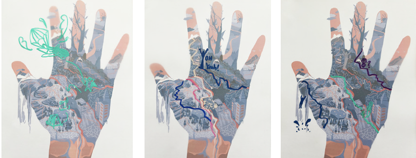

Where the Lines Pull

作品介绍
"Where the Lines Pull" "Where the Lines Pull" is an imaginativeillustration project that merges painting withcartography, using lines and shapes to narratestories about "choice" and "life's possibilities."Like signposts and rivers on a map, these linestransform from predetermined fate into symbolsof life's infinite potential and uncharted adventures. The final artwork resembles atranslucent archive, collecting palm prints and idealizedroutes from diverse individuals - making everypersonal story visible and shareable. The project draws inspiration from our hands -not just practical tools for daily living, butinstruments for emotional expression and futurecreation. Have you ever wondered if palm linestruly determine destiny? By juxtaposing "palm-read fate" with "self-drawn ideal paths," theproject reveals: life isn't a preset course, but amap you chart yourself.Through blendingpalmistry symbols with cartographic elements- using navy blue to represent the unknown andvibrant orange for hope - l invited participants to sketch theirdream routes.These were then overlaid with their actual palm lineson transparent materials, creating visual dialogues betweenaspirations and reality. This interplay invites viewers tocontemplate the truenature of destiny.
